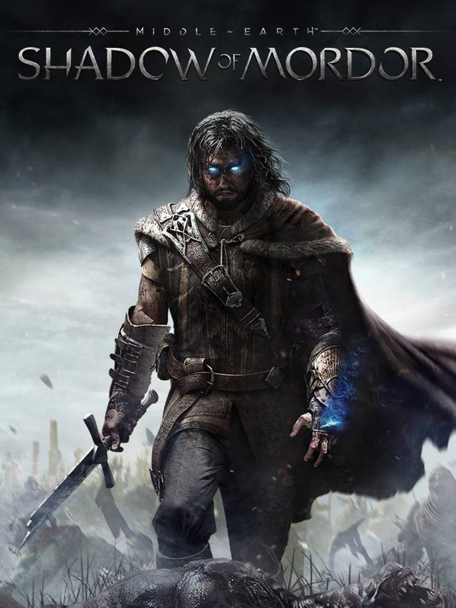

Middle-earth: Shadow of Mordor
Middle-earth: Shadow of Mordor
Details
|  | |
| Spielzeit | 2h 2m 0s |
| Letzte Aktivität | 08.03.2020 15:49:14 |
| Hinzugefügt | 08.03.2014 |
| Modifiziert | 10.11.2022 13:48:27 |
| Fertigstellungsstatus | Gespielt |
| Bibliothek | Steam |
| Quelle | Steam |
| Plattform | PC (Windows) |
| Veröffentlichungsdatum | 30.09.2014 |
| Community Bewertungen | 81 |
| Kritiker Punkte | 84 |
| Benutzerwertung | |
| Genre | Adventure Hack and slash/Beat 'em up |
| Entwickler | Feral Interactive (Linux) Feral Interactive (Mac) Monolith Productions |
| Verleger | Feral Interactive (Mac) WB Games |
| Eigenschaft | Achievements Cloud Saves Controller Support Single Player Steam Karten |
| Links | Communityhub Diskussionen Neuigkeiten Shopseite PCGamingWiki Errungenschaften |
| Tag | Achievements Full Controller Support Steam Cloud |
Beschreibung
*** Nemesis Forge Update ***
Forge your Nemesis and discover your greatest Ally in Middle-earth™: Shadow of Mordor™ now; continue their story October 10 in Middle-earth™: Shadow of War™. Nemesis Forge available only with purchase of Middle-earth™: Shadow of Mordor™ and Middle-earth™: Shadow of War™ on PC and subject at all times to the WB Terms of Service. Nemesis Forge is not available in Japan. Winner of over 50 "Best of 2014" Awards including Game of the Year, Best Action Game and Most Innovative Game. More Missions: The Lord of the Hunt, The Bright Lord Story More Challenges: Test of Power, Test of Speed, Test of Wisdom, Endless Challenge More Skins: The Dark Ranger, Captain of the Watch More Runes: Hidden Blade, Deadly Archer, Flame of Anor, Rising Storm More Warband Missions: Guardians of the Flaming Eye, The Berserks, The Skull Crushers, The Flesh Burners, The Blood Hunters